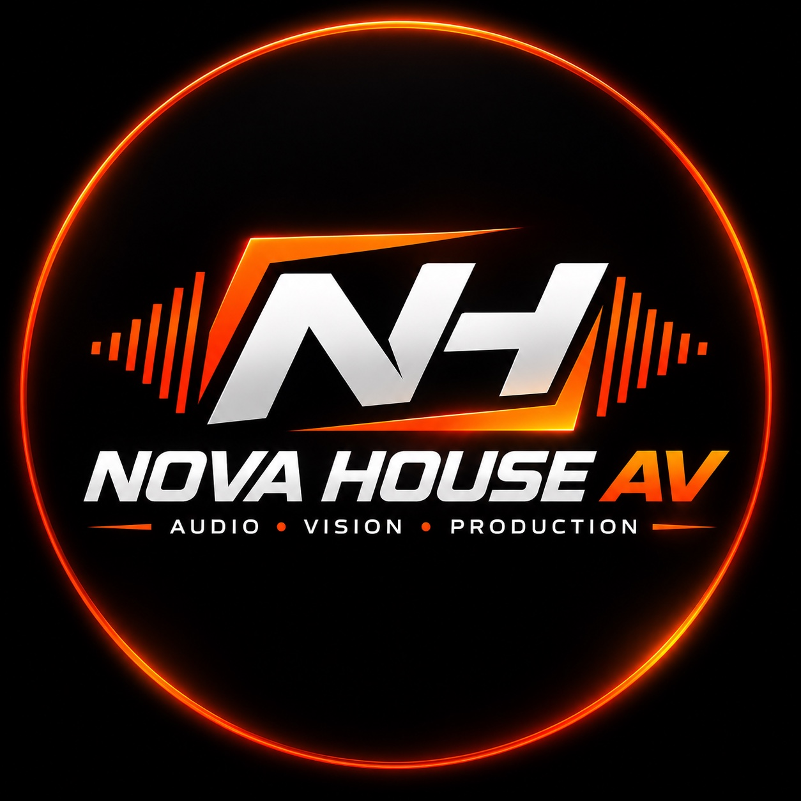

Make every event
sound right.
Professional audio hire, live sound engineering and AV production for live music, corporate events, worship and special events across Sydney.

Audio that delivers.
Start with exactly what your event needs — equipment only, an experienced engineer, or a complete audio solution.
Equipment Hire
Professional audio equipment available for dry hire, with flexible daily and weekend options.
Live Sound Engineering
FOH and monitor engineering for bands, worship, venues and events.
AV Production
Audio setup, operation and production support for corporate and live events.

Allen & Heath SQ-6
Professional 48-channel, 96kHz digital mixing console with 24+1 motorised faders, ideal for live music, events and production.
✓ Dry hire available
✓ Weekend rates
✓ Delivery & setup available
✓ Engineer available
Simple hire. Proper process.
Request
Tell us your date, event and equipment requirements.
Confirm
We check availability and send your quote.
Secure
Complete the hire agreement, payment and required verification.
Deliver
Collect your gear or arrange delivery and setup.
Built around live production.
Nova House AV is a Sydney-based audio and AV business focused on reliable equipment, clean production and practical support for live events. From console hire to hands-on engineering, we help make the technical side of your event straightforward.
Tell us about your event.
Send through the details below and we'll use them to prepare your hire or production quote. Online submissions will be enabled before launch.